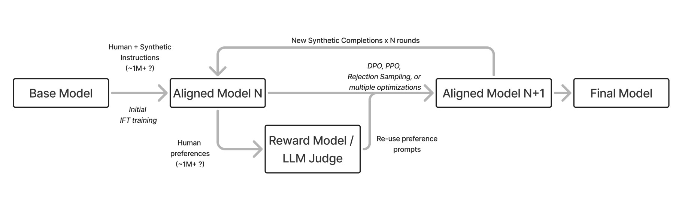
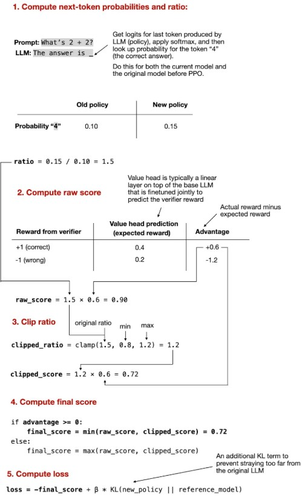
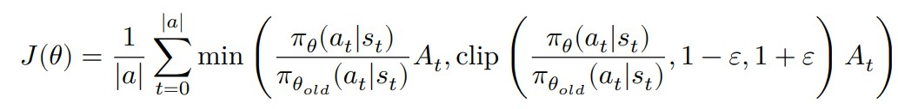
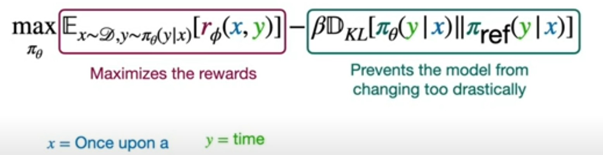
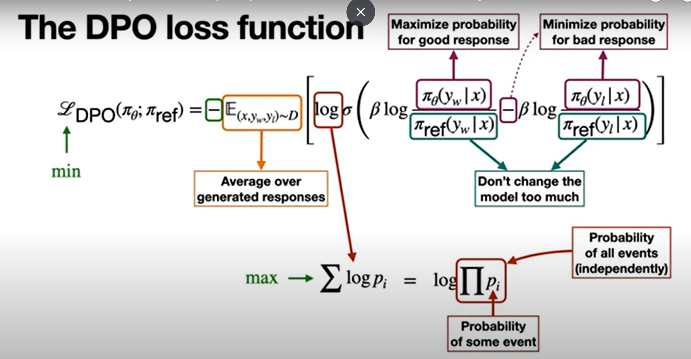

RLHF (Reinforcement Learning with Human Feedback)
Key Concept
RLHF tunes a model's responses at the response level, not at the next-token prediction level like standard language modeling.
It is used in the alignment phase, after pretraining, to make the model behave in a way that is helpful, harmless, and honest.
Core Components of RLHF
- Pretrained Model: Contains most of the model’s knowledge and capabilities. Alignment focuses on how that knowledge is used.
- Reward Model: Trained separately using human preferences (ranked outputs). Depends on the application domain.
- Reinforcement Learning Step: Fine-tuned using PPO or similar algorithms with help from the reward model.
- Contrastive Loss: Used with negative feedback to help differentiate good and bad responses.
Alignment Hypothesis
According to the Superficial Alignment Hypothesis
- Alignment is mostly about style and format, not deep reasoning.
- A small set of examples might be enough to tune a pretrained model.
- This suggests that alignment ≠ knowledge.
Milestones in RLHF & Alignment
- First ChatGPT: Trained using RLHF.
- Shift in Post-Training Methods: The DPO (Direct Preference Optimization) method emerged.
- DPO Era Models: Zephyr-Beta, Tulu 2, and others demonstrated improved alignment through direct preference learning.
DPO (Direct preference optimization): Directly learns from human preferences without using a reward model; simpler and stable.
PPO (Proximal policy optimization): A reinforcement learning algorithm commonly used in RLHF with a reward model.
Alternative Feedback Methods
- TAMER: Humans iteratively score actions, teaching the agent a reward model.
- COACH: Human feedback is used to tune the advantage function.
These two are human in loop methods for RL, usually used in Robotics/RL games and not usually in LLMs. Here a human gives active feedback according to rank or advantage shaping.
Modern Language Model Architecture
- Uses decoder-only Transformers (e.g., GPT architecture).
- Rely on self-attention mechanisms to understand and generate language.
Reward Models in Alignment
Reward models are critical components in aligning language models to human preferences by assigning scalar values that represent the quality of a model's output.
Types of Reward Models
- Outcome Reward Models (ORM):
- Assess the final output of a language model.
- Predicts the probability that a response leads to a correct or desirable outcome.
- Best suited for tasks with clear, single-answer objectives.
- Process Reward Models (PRM):
- Evaluate the intermediate reasoning steps taken by a model.
- Assigns a reward score to each step in the reasoning process.
- Helpful for tasks requiring complex, multi-step reasoning or transparency.
Optimization Techniques for Alignment
- Reward Modeling:
- A model is trained using human-labeled preferences.
- Outputs a scalar reward signal for future generations based on quality.
- Used in RLHF setups for guiding policy improvement.
- Instruction Fine-tuning:
- Supervised fine-tuning of language models using curated question-answer pairs.
- Teaches the model the format and style of human-aligned responses.
- Acts as the first stage before reinforcement-based fine-tuning.
- Rejection Sampling:
- A filtering method used to discard poor outputs.
- Only keeps samples that align with human preferences or meet reward thresholds.
- Simple and effective for low-latency deployment or training efficiency.
- Policy Gradients:
- Updates model parameters using the reward model’s signal.
- Part of standard reinforcement learning (e.g., PPO).
- Trains the model to prefer high-reward outputs by maximizing expected reward.
- Direct Alignment Algorithms:
- Optimize model behavior directly from human preferences, bypassing a reward model.
- Example: Direct Preference Optimization (DPO).
- Reduces complexity and instability from intermediate reward estimation.
Conclusion: These techniques are fundamental in ensuring that large language models not only generate fluent text but also behave in ways aligned with human values and expectations.

The diagram above shows the following:
First, A base model is trained with human + synthetic instructions ie. the initial IFT (Instruction fine tuning), creating an SFT model ie Supervised fine tuned model
Second, A reward model or an LLM judge is used (made with human preferences), along with the help of PPO or DPO or other multiple optimization techniques to calculate loss, which is send back to retrain the SFT model.
Finally, we retrain the SFT model, creating a new aligned model after some n iterations.
PPO (Proximal Policy Optimization) - Reinforcement Learning Notes
PPO (Proximal Policy Optimization) Algorithm
Core Components
| Component |
Role |
| Policy Network |
Takes a state as input and outputs a probability distribution over actions. |
| Value Function Network (Critic) |
Takes a state (or state-action pair) and estimates the Q-value (expected return). |
Training Loop (Simplified)
Pass 1 (One batch of trajectories):
- Use Policy Network to generate actions from current states.
- Use Value Function Network to estimate Q-values for these actions.
- Compute Advantage = Actual Return − Estimated Value
- Actual Return = Sum of discounted future rewards
- Compute losses and backpropagate:
- Value Network → MSE loss from advantage
- Policy Network → Clipped surrogate objective loss
Pass 2 and Onward:
- For each new batch:
- Recalculate MSE loss for value network
- Recalculate clipped objective loss for policy network
- Update both networks
- Repeat for several epochs
Policy Network Loss (Clipped Objective)
- Store:
- Old probabilities from previous policy
- Actions and corresponding states
- Compute:
ratio = new_prob / old_probfin1 = ratio × advantagefin2 = clip(ratio, 1 - ε, 1 + ε) × advantageloss = -min(fin1, fin2) (negative for gradient ascent)

- Use this loss to update the policy network parameters.

Value Network Loss (Critic Loss)
- Use Mean Squared Error (MSE) between predicted value and actual return.
- Update value function network with this loss.
Conclusion: PPO efficiently balances stability and performance by constraining policy updates and optimizing both the actor and critic networks iteratively.
RLHF & PPO - Clarification Points
🚨 Key Points You Got Confused About (Clarified)
- ❌ Confusion: PPO trains the reward model.
- ✅ Correction: PPO does not train the reward model. It trains the policy network using signals from a pretrained reward model.
- ❌ Confusion: PPO targets the value network of the base model.
- ✅ Correction: PPO uses a value network (critic) that may be a separate head or module, not the base model's own components.
- ❌ Confusion: Reward model and value network are the same.
- ✅ Correction: The reward model is trained with human feedback to score outputs. The value network is part of PPO's RL framework and estimates expected returns for actions/states.
- ❌ Confusion: PPO works on token-level predictions like standard LM training.
- ✅ Correction: PPO operates at the response-level, optimizing complete outputs using reward feedback — not token-by-token.
- ❌ Confusion: PPO is a one-step or static optimization.
- ✅ Correction: PPO is a multi-step iterative process, involving repeated sampling, advantage calculation, and gradient updates to both policy and value networks.
DPO (Direct Preference Optimization)
What is DPO?
DPO is a post-training alignment method that eliminates the need for a separate reward model by training a language model to directly increase the probability of preferred outputs.
Key Steps
- Pretrain a base LLM (Large Language Model).
- Generate pairs of outputs from the LLM and collect human feedback (as rankings or preferences).
- Train the model to assign:
- High probability to preferred (positive) completions.
- Low probability to less preferred (negative) completions.
Overall, our goal is the 1) Get rid of the reward model and 2) Avoid the model from updating too much.

Replacement for Reward Model: Bradley-Terry Model
Although DPO aims to avoid using a traditional reward model, it does so by modeling the probability of preference using the Bradley-Terry (BT) model.
The BT model uses the sigmoid function to convert the log-likelihood difference between two outputs into a probability value between 0 and 1:
P(prefer A over B) = sigmoid(πₐ - π_b)
Here, πₐ and π_b are log-likelihoods (or pseudo-reward scores) of the two completions.
Preventing Over-Updating: KL Divergence Regularization
To ensure the model doesn’t drift too far from the original pretrained distribution, DPO adds a KL divergence penalty. This ensures stability and preserves base model knowledge.
Loss = -log( sigmoid(πₐ - π_b) ) + {β * KL(π_new || π_old)}
Explanation:
KL(π_new || π_old): Penalizes the new model for deviating too much from the original (preference-unaware) model.β: A hyperparameter controlling how strong the penalty is.
This allows the model to learn human-aligned preferences without needing a separate reward model, yet keeping it close to its pretrained distribution.
